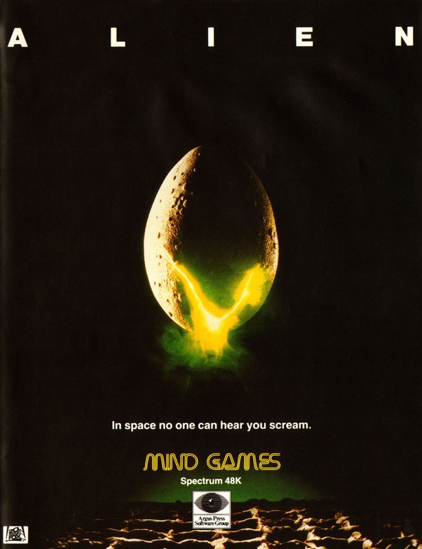
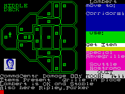

Alien


{kind=link}

| Publisher: | Argus Press Software |
| Price: | £8.99 |
| Year: | 1984 |
| Source: | CRASH, Issue 15 |

Alien is published under the ‘Mind Games’ heading part of the Argus empire. For once, I can actually find it in me to say some nice things about one of their products. Alien is a very good game indeed, and a very faithful reproduction of the film to boot. It’s always been the case until now that games licensed from films or TV have been marriages more of convenience than made heaven — games like The Fall Guy tend to concentrate on a minuscule part of their subject matter and make the major (if not the only) feature of the game. Even Ghostbusters really only used two of the subject ideas from the film, and it’s been hailed as a masterpiece of thematic conversion. It makes me wonder really if software houses view name licences as anything except a licence to print loads of bread from the gullible viewing (and listening) public. I mean, what on earth are Ocean trying to do with Frankie Goes to Hollywood? I’d guess it will be a straight-forward platform game with a few naughty bits thrown in for the giggling rebels. But simply the fact that Ocean reckon they can sell a computer game with the name ‘Frankie’ on it, with no initial plot or game idea laid down at all, indicates the poor esteem in which most companies hold the material that they draw their licences from, and their total lack of regard for all the creative work that went into the piece in the first place.
Thankfully, this is not the case with Alien. Alien, the game, has been written by fans, and it shows. Anyone who has seen the film will know that the situation gets incredibly tense once the hunt for the Alien gets under way in the ship (if you haven’t seen the film, persuade someone with a video to get it out — it really is one of the best and most probable science-fiction films ever made; its director, Ridley Scott, has gone on to make ‘Blade Runner’, and is also very famous as a TV commercial director — recent pieces include the pre-Raphaelite Mazola commercial, and the Apple 1984 Mega-commercial shown during the Superbowl, which cost 2 million dollars for 2 minutes — but I digress).

Software's sci-fi horror game ALIEN.
Somewhere in there the Big A is about
to chomp an unlucky crew member.
There’s a quick summary of the film in the excellent booklet that comes with the game. Tension and suspense are very difficult properties to convey in any medium, let alone the computer game, which gives you a quaint little flickering blob when you wanted a chainsaw, and a squeaky little note when you wanted a massive pipe organ blast! All the same, more reason to congratulate the author on succeeding so admirably in creating a tense environment in the game.
The action starts when the first member of the crew has just had his internal organs re-arranged by the Alien bursting out of his chest. The hunt is on for the beastie with the remaining crew members, one of which is an android whose aim is to keep the Alien alive, just to complicate matters.
There are 35 different rooms on 3 decks to search; but the rooms are also connected by ducting which the Alien uses freely, but which most of the crew are loathe to enter. From what I can tell, there are basically two ways of destroying the Alien — it is possible to herd it into an airlock and then blast it out into space, or it is possible to leave the Alien on the ship, set the auto-destruct mechanism, and escape in the shuttle Narcissus, provided that you have Jones the cat, and no one is left alive on board the ship.
It soon became clear that my attempts to find the Alien were of secondary importance to my need to find the cat — and it was only after my third abortive encounter with the little scumbag that I sussed I had to have a cat box in order to catch him. By which time, of course, Ripley was the only person left on the ship and her morale was getting distinctly frayed... another feature of the game is the way that the responses to orders are affected by the personality of the crew member, and how much they have had to suffer. I found that Parker the engineer remained confident and responsive right up until the Alien sneaked up behind him and bit his jugular out. Ripley, on the other hand, freaked out so much at the sight of a dead body that I had to take her halfway round the ship to avoid coming across any more. Not surprisingly, perhaps, my involvement with the characters in the game grew as the number of the crew dwindled (ie got chomped by the big A), and the game became more of a role-playing game than strategy / command game; until (because I’m not very good at it) there was only one character left, and I started identifying completely with that character; becoming first jumpy and then downright scared as I went into yet another no-exit storeroom hunt for Jones the cat.
When you’re playing with the entire crew at your disposal, though, you do get quite the feel of being in overall command. I even felt at times as though I was on the ship, as the unseen commander. The screen shows you a plan of the deck you are on, or the ducting in the immediate vicinity of anyone who is unlucky enough to be down there. You are given the menu of options to choose from — the main menu has the crew, to order individually, and the three deck plans. If you choose a crew member, your menu then changes, giving possible movements for that member, and other possibilities such as picking up weapons, entering the ducting and catching the cat (!) In particular situations, special options will appear — for example, starting the self-destruct system when in the command centre. The screen also displays reports on the condition of the crew member you’ve selected, whether there is any damage to the room you’re in and whether the Grille is open (important because it shows if the Alien has been there or not). You also get the occasional message from ‘Mother’, the ship’s computer, telling you useful stuff, like the fact that while you have just been picking up the cat box one of your crew members has taken compulsory redundancy from the monster.
There are a lot of aspects to the game which I have not entirely come to grips with yet; like, for example, exactly how to work the ‘trackers’ and how many sensors ‘Mother’ has. I did, however, find it very useful to make a map of the ship; it’s not really necessary because the ship is shown on the screen, but it does help a great deal in familiarising yourself with the layout of the ship, the names of the rooms etc. I found when I was playing that I rarely needed to check the location of rooms from the menu on-screen, which I think saved a lot of time — and speed is very important in a real-time game of this sort.
The sound effects helped to create suspense; the fact that you cannot see where the Alien is, but keep coming across evidence of its recent passage, and hearing it move around, adds to the atmosphere of groping around in the dark — again, a very faithful recreation of the film’s feel. Because you know it’s a real-time game, the little scrapes you hear (of doors and, grilles being opened) and the blip from the tracker become vital aids to your strategic planning — which is a whole new area for sound effects. Of course, as with any computer game, there are bound to be irritating oversights in the program. I would personally have much preferred to have been able to see all the crew’s positions at once (at least those on a particular deck), and I found the menu selector system a little cumbersome to use — for example, I always seemed to select the wrong option and go back to the main menu just when I needed to do something really vital, like catching the cat. Surprisingly, though, the menus themselves are very well thought out, and I rarely found myself wishing I had more options available than were listed — with the exception that it would be useful to have been able to communicate directly between crew members. The ‘special’ option always seemed to cater for particular situations — a definite improvement on other fixed-input games such as Lords of Midnight.
Finally, Alien is a hard game to win at, I thought I’d done really well after a single two-hour game, to get one member of the crew off in the escape shuttle with the cat — but I scored 0%!
COMMENTS
| Overall Verdict: | An excellent game — should keep you going for weeks. Hitchcock would have loved it. |